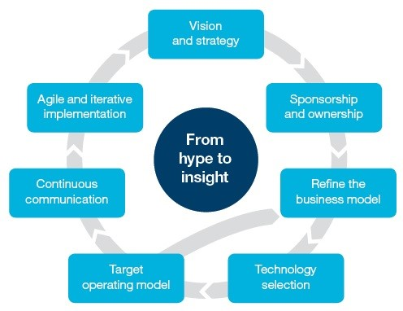

by Aline Caliente 73151 Marco Rodrigues 78073
Internet of Things in the Industrial Sector – IBM Global Business Services.
The best time to plant a tree was 20 years ago, the second best time is now
Recent technological advances in cloud, networking, mobile and analytics and the low cost of equipment, sensors and devices led to a unique transformation on the manufacturing sector. Like never before, large volumes of data produced by Internet of Things (IoT) devices can be understood, processed and monetized.
The Internet of Things has a total potential economic impact of $3.9 trillion to $11.1 trillion per year in 2025
The case study analyses the IBM perspective on how to successfully leverage their manufacturing clients into an IoT favorable positioning. This way, their clients move beyond the hype, identifying what is truly fundamental to their business, being able to execute and achieve this vision.
This shift is being experienced by many industrial Original Equipment Manufacturers (OEMs). An OEM is a company that produces goods posteriorly used as components in the products of another company, which then sells the finished item to its users. This firm is referred to as a Value-Added Reseller (VAR) because by incorporating features or services, it adds value to the original item. The OEM often customizes designs based on the VAR needs and specifications.
The change is disrupting both the industrial manufacturing products, and the ecosystem they operate in, namely:
1. The shift to data-enabled services: with this, service offerings are extended to condition monitoring, performance-based and predictive maintenance, and it is even possible to monetize the data itself. A manufacturer of rotating equipment and associated products working with IBM, has instrumented their products with a number of sensors and connectivity that allow them to receive real-time data on parameters such as vibration, temperature, humidity and so on. This data allows them to understand how the equipment is performing in the field and enables them to sell condition monitoring and predictive maintenance services to their clients, opening up a whole new revenue stream and type of relationship with their customer base;
2. Value creation shifts to customer-centric: the value chains are extended from their product to their customers, as the products become connected devices. OEMs can now reach their end users for buying behavior, communicate and offer additional products and services through the time of a product’s usage. An example is the manufacturers of electronics such as home appliances and TVs, since the user has to register to use the mobile app in order to interact with the product, having a direct touch point to the customer, even influencing their buying behavior when it is time to replace the product;
3. Relationship changes disrupt existing ecosystems: traditional manufacturing combined in real-time with third-party services on new digital platforms can create highly customizable services, which can have a disruptive impact on traditional business models and the competition;
4. Data-driven Research & Development (R&D): OEMs are moving to an agile and continuous approach, where the design and update of new products are constantly evolving based on real-time feedback, resulting in faster manufacturing of next generation products. An example is a major manufacturer of jet engines that is working with IBM to receive detailed data from their jet engines in use. Thousands of continuous data points are gathered every second, allowing the product engineers to understand how their engines perform when subject to real world conditions such as extreme weather.
Then, it is possible to formulate the overall vision and strategy, including how the organization will use IoT opportunities. Next, to implement the technology solutions and components required in this transition. Given the transformation within many industries, these steps need to be both iterative and ongoing throughout the transformation. It is important to note that the delivery model outlined is not unique to IoT initiatives. .
More than half of CxO executives see the Internet of Things (IoT) as an important technology.
IBM believes this process will be ongoing, with unforeseen developments and implications, since the supply chains of industrial OEMs are becoming disrupted and evolving constantly with smarter services. It will become vital to continuously test, reuse and build upon other inventions. This will disrupt entire industries and create new revenue streams and business models.